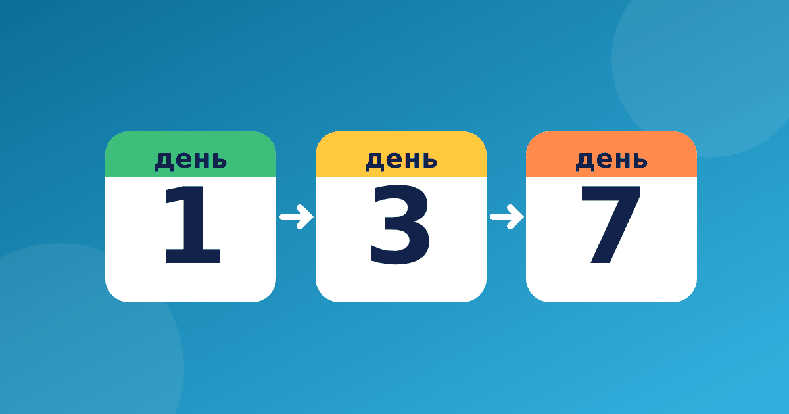

Повторять реже, но вовремя: расписание для таблицы

Интервальное повторение для детей звучит сложно, хотя идея простая: возвращаться к материалу не каждый день подряд, а через всё более длинные паузы. Многие родители замечают, что вчера ребёнок уверенно отвечал, а сегодня снова путается. Это нормально, и расписание повторов помогает справляться с этим спокойно.
Идея в двух словах
Сначала новое повторяют на следующий день, потом через три дня, затем через неделю и через две. Что ребёнок вспомнил, то переходит на следующий уровень пауз. Что забылось, то возвращается к частым повторам. Так время тратится на действительно шаткие случаи, а не на то, что давно известно. Это не волшебная схема, а удобный способ распределить силы, и результат всё равно зависит от регулярности.
Почему такой подход подходит именно таблице? Она состоит из множества мелких примеров, и запоминаются они неодинаково. Двойку и пятёрку большинство детей усваивает быстро, а шестёрка, семёрка и восьмёрка требуют больше возвращений. Интервальная схема позволяет уделять каждому примеру столько внимания, сколько ему нужно, не раздувая время занятий.
Как закрепить таблицу умножения по шагам
Возьмём шестёрку. Разделите примеры на три кучки: знаю уверенно, знаю не всегда, пока не помню. Допустим, 6 × 2 = 12 и 6 × 5 = 30 уже в первой кучке, 6 × 7 = 42 во второй, а 6 × 8 = 48 в третьей. Карточки для этого подходят отлично, подробнее о них в статье про карточки таблицы умножения. Дальше действуем так.
- Третья кучка — каждый день по несколько примеров
- Вторая кучка — через день
- Первая кучка — примерно раз в неделю, для проверки
Когда пример из третьей кучки дважды подряд назван верно, он переезжает во вторую. Если ребёнок ошибся, пример возвращается обратно, и никаких упрёков.
Важно, что паузы растут постепенно. Если ребёнок после трёх повторов называет ответ без раздумий, интервал можно увеличить. Если ответ снова теряется, ничего страшного, вернитесь на шаг назад. Так вы подстраиваетесь под реального ребёнка, а не под чужое расписание.
Как вести календарь повторений
Достаточно листа бумаги или обычного настенного календаря. Отмечайте, что именно повторяли, и сразу ставьте пометку на следующий раз. Вот пример для таблицы умножения на 4.
- первый день — знакомимся с новыми примерами
- второй день — вспоминаем те же примеры
- четвёртый день — повторяем снова
- через неделю — проверяем, остался ли ответ в памяти
Не нужно повторять всю таблицу сразу. Лучше брать по пять или шесть примеров, чтобы занятие укладывалось в десять минут.
Хороший помощник тут сам ребёнок. Пусть он переставляет карточки из кучки в кучку и видит, как третья кучка постепенно пустеет. Это наглядный сигнал прогресса, и он мотивирует лучше любых слов. Пример недели может выглядеть так.
- понедельник — разбираем новые примеры и раскладываем их по кучкам
- вторник — быстро повторяем третью кучку
- среда — отдых или игра
- четверг — третья и вторая кучки
- пятница — проверка первой кучки, перекладываем карточки
Такой ритм не перегружает и оставляет время на другие уроки. Если неделя сорвалась из-за болезни или поездки, просто продолжайте с того места, где остановились, без попыток всё наверстать за один вечер.
Как совместить повторы с новыми темами
Новые примеры не нужно откладывать до тех пор, пока старые выучены идеально. Достаточно в каждое занятие включать два-три новых примера и столько же из прежних кучек. Например, после таблицы на 2 и 3 можно переходить к четвёрке, продолжая возвращаться к тому, что уже прошли. Так знания накапливаются, а не заменяют друг друга.
Что делать, если ребёнок забыл
Забывание это часть процесса, а не повод для упрёков. Если после паузы ответ не вспомнился, покажите другой путь к нему. Например, 7 × 6 можно найти через 7 × 5 = 35 и прибавить ещё 7, получится 42. Повторение таблицы умножения удобно вести в тренажёре «Таблица без зубрёжки». Часть его бесплатна, на вопросах нет таймеров и рекламы, а кнопка «Показать визуально» помогает увидеть пример на картинке.
Что считать успехом? Не безошибочную таблицу к определённой дате, а то, что количество знакомых примеров постепенно растёт, а ответы даются легче. Если вы заметили, что третья кучка стала меньше, значит, всё идёт как нужно, даже если до идеала ещё далеко.
Когда схема не поможет
Повторы закрепляют то, что ребёнок уже понял, но не заменяют понимания. Если смысл умножения пока неясен, начните с материала когда ребёнок не понимает таблицу. О том, сколько времени отводить на занятия, читайте в статье про занятия в день. Десяти спокойных минут обычно достаточно.